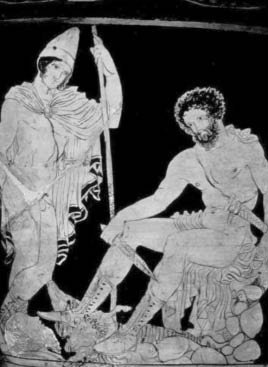

Bilici Kör Teyresyas, Ölüler Ülkesi'nde Odisseus ile birlikte
Tebaili Teyresyas (Teiresias), antikçağın gelip geçmiş en ünlü bilicisiydi... Yalnız krallar, soylular değil; bazı tanrılar bile olup bitecekler ve başlarına gelebilecek şeyler konusunda sık sık akıl danışırlardı ona...
Aslında Teyresyas, Tebai krallığının kurucusu kral Kadmos'un toprağa ektiği bir canavarın dişlerinden filizlenip türeyen ve Spartoy (Spartoi) denen insan soyundandı... Ve Teyresyas'ın, diğer soydaşlarının tam tersine, daha yeni yetmeliğindeyken bile, dağlarda bayırlarda tek başına gezip tozmak gibi çok sevdiği bir alışkanlığı vardı... İşte bir gün gene böyle tek başına ormanda gezinirken, çiftleşen iki yılan gördü önünde... Nedenini tam olarak kendisi bile bilmeden, elindeki değneğiyle yılanlardan birine şöyle hafiften dokunuverdi... Dokunur dokunmaz da, güzeller güzeli bir genç kıza dönüşüverdi!.. Artık tam yedi yıl boyunca, bu yeni kadın cinsiyetiyle, beğendiği erkeklerle gönlünce düşüp kalktı genç Teyresyas... Dağlarda bayırlarda dolaşmasını gene eskisi gibi hep sürdürdü. İşte bu gezintilerinin birinde gene çiftleşen iki yılan gördü. "Bir keresinde böyle çiftleşen yılanlardan birine vurduğumda kadın oluvermiştim!.. Acaba şimdi ne olacak bakalım?" deyip yılanlardan birine değneğiyle gene şöyle bir dokundu. Dokunur dokunmaz da yeniden bir erkeğe dönüşüverdi!.. Bu başına gelenleri kimselere anlatamadı haliyle...
Bir gün Olimpos'ta tanrılar toplantı halindeyken, keçi sakallı tanrı Pan; "Aşk sırasında kadın mı daha çok zevk duyar, yoksa erkek mi?" konulu bir gündem maddesi attı ortaya! Tanrı ve tanrıçalar uzun süre bu konu üzerinde tartıştılar... Aralarında anlaşamadıkları için birbirleriyle kanlı bıçaklı olacaklardı neredeyse!.. Hatta Baştanrı Zeus'la karısı Hera da en ateşli tartışmacılardandı... Haliyle hiçbir tanrı ve de hiçbir insan, iki cinsiyeti ayrı ayrı yaşamadığı için, aşk sırasında kadının mı erkeğin mi daha fazla zevk aldığı bilinemezdi... Tartışmaların çok kızıştığı bir sırada demircilerin tanrısı topal Hefaystos, bu konuda bilici Teyresyas'a danışılması önerisini attı ortaya! Bu görüş hemen hemen bütün tanrılarca benimsendi. Çünkü Teyresyas, her iki cinsiyeti de ayrı ayrı ve dolu dolu yaşamıştı! Böylece tanrılar, Olimpos tarihinde ilk kez bir insanın bilgisine başvurma kararı aldılar... Ve hemen apar topar Olimpos'a getirttiler bilici Teyresyas'ı. O da; "Erkek bir zevk duyarsa, kadın tam dokuz katını duyar!" dedi... Tanrılar arasındaki tartışma da burada bitti! Tanrıça Hera, tanrılar önünde Teyresyas'ın böyle açıkça bilgi vermesine çok öfkelendi. Çünkü kadınlığın sırrını açıklamış oluyordu uluorta... Bu yüzden de hemen gözlerini kör etti Teyresyas'ın. Ama Baştanrı Zeus da karısı Hera'nın bu haksız cezasına karşılık onu bilicilik ve kuş dilini anlama yetileriyle ödüllendirdi... Üstelik dokuz kuşak sürecek çok uzun bir yaşam süresi de bağışladı ona!..
Artık "Kör Bilici" olarak her tarafa yayıldı Teyresyas'ın ünü... Zeus'un bağışladığı o uzun yaşam süresinde de, bilicilik ve kuş dilini anlama yetileriyle, onun antikçağ tarihini büyük ölçüde yönlendirdiğini söylemek hiç de abartı sayılmazdı. Geleceklerini öğrenmek isteyen krallar, soylular kuyruk oluyorlardı onun kapısında!..
Kraliçe Alkmene'nin Baştanrı Zeus'tan gebe kaldığını ve doğuracağı Herakles adlı çocuğun o yüzden çok güçlü olacağını da Teyresyas açıkladı o kör gözleriyle... Babasını öldürdüğü ve öz anasıyla evlendiği gerçeğini de o söyledi kral Oidipus'a!.. Tabii bunu hemen söyleyemedi. Ama Oidipus onu çok sıkıştırdığı için sonunda açık açık bu gerçeği söylemek zorunda kaldı... Gene Narhisos'un suya bakıp orada görüntüsünü seyrettiği zaman öleceğini ve bir çiçeğe dönüşeceğini de o söylemişti... Gerçekten de Narhisos, bir gün suda kendini seyretti ve hemen bir nergis çiçeğine (Narhisos çiçeği) dönüşüverdi... Ve dere, göl, ırmak kenarlarında hep kendini seyreden bu çiçek, bütün Batı dillerinde onun adını aldı...
Yalnız insanlar değil, tanrılar bile Teyresyas'a akıl danışırlardı sık sık... Örneğin buğday tanrıçası Demeter'in kızı Persefone; dünyamıza geldiğinde bir gün, Teyresyas'a kendi geleceğiyle ilgili bir şeyler sordu. O da görmeyen gözleriyle gülümseyip; "Bir gün Yeraltı Dünyası'nın kraliçesi olacaksın..." dedi. Bunun ne anlama geldiğini o anda anlayamadı tanrıça Persefone. Ne var ki gene anası tanrıça Demeter'le dünyamıza geldiği bir başka gün, arkadaşlarıyla çiçek toplarken, Ölüler Ülkesi'nin acımasız tanrısı Hades, onu kaptığı gibi yeraltındaki sarayına alıp götürdü! Anası tanrıça Demeter de her yerde didik didik aradı onu. Bulamayınca da hem dünyamıza, hem Olimpos Tanrılar Ülkesi'ne küstü. O küsünce, buğday veren toprak da soğudu; hiçbir tohum meyveye ve tahıla dönüşmek için çatlamaz oldu! Büyük bir kıtlık başladı dünyamızda... Ölüler Ülkesi'nin tanrısı Hades de bu arada nar taneleri yedirdi Persefone'ye... Çünkü orada bir tek nar tanesi yiyen bile, bir daha ayrılmak istemiyordu Ölüler Ülkesi'nden... Böylece yeraltı dünyasının kraliçesi olup çıktı tanrıça Persefone!.. Ne var ki Demeter'in bastırması üzerine o, yılın dört ayını dünyamızda geçirmeye başladı... O yüzden Persefone dünyamıza gelince, uyuyan sular hemen uyanıyor ve ısınan toprakta bütün tohumlar çatlıyordu...
Teyresyas gerçekten de dokuz kuşak sürecek bir yaşam sürdürdükten sonra bütün ölümlüler gibi o da, son yurdu Ölüler Ülkesi'ne gitti... Orada tanrıça Persefone çok iyi karşıladı onu. Ve dünyamızdaki bilicilik uğraşını orada da sürdürmesini sağladı...
Troya yakılıp yıkıldıktan sonra Yunanistanlı kral Odisseus ülkesine dönerken, denizlerde başına gelmedik kalmadı! O yüzden başvurduğu tanrıça Kirke ona, Ölüler Ülkesi'ne gidip orada hâlâ bilicilik uğraşını sürdüren Teyresyas'la konuşmasını öğütledi. "Çünkü seni ülkene sağ salim ulaştıracak yolu yalnızca o bilebilir," dedi... Odisseus da Ölüler Ülkesi'ne gidip Teyresyas'la konuştu; en kısa dönüş yolunu öğrendi ondan!..
O çok uzun süren yaşamı sırasında Teyresyas; "İnsanların başlarına gelecek yıkımları görememeleri ve bunu başkalarından duymak istemeleri çok acı!" diye dert yanıyordu yakınlarına sık sık... "Aslında bilicilere hiç gerek yok! Ama ben onları kırmamak için hep bir şeyler söylemek zorunda kalıyorum," diyordu...